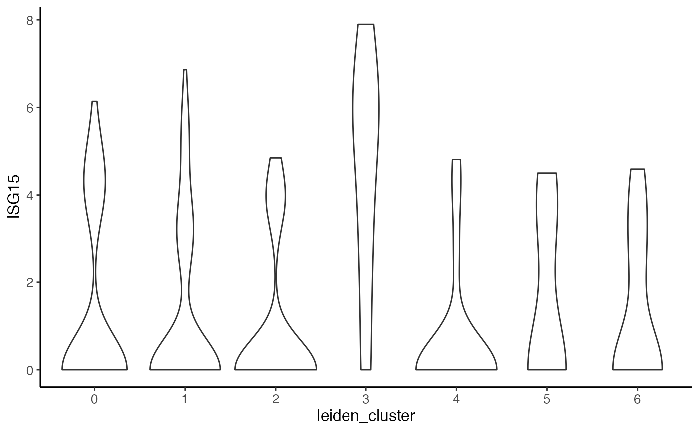
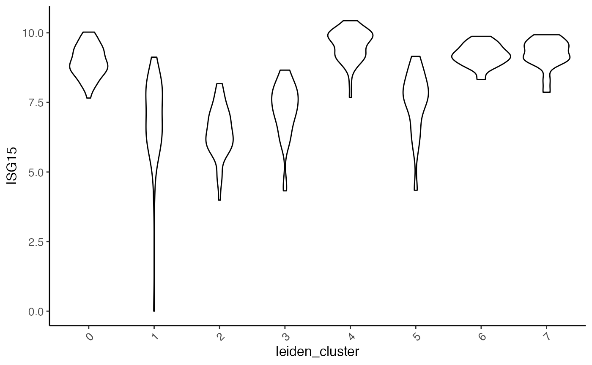
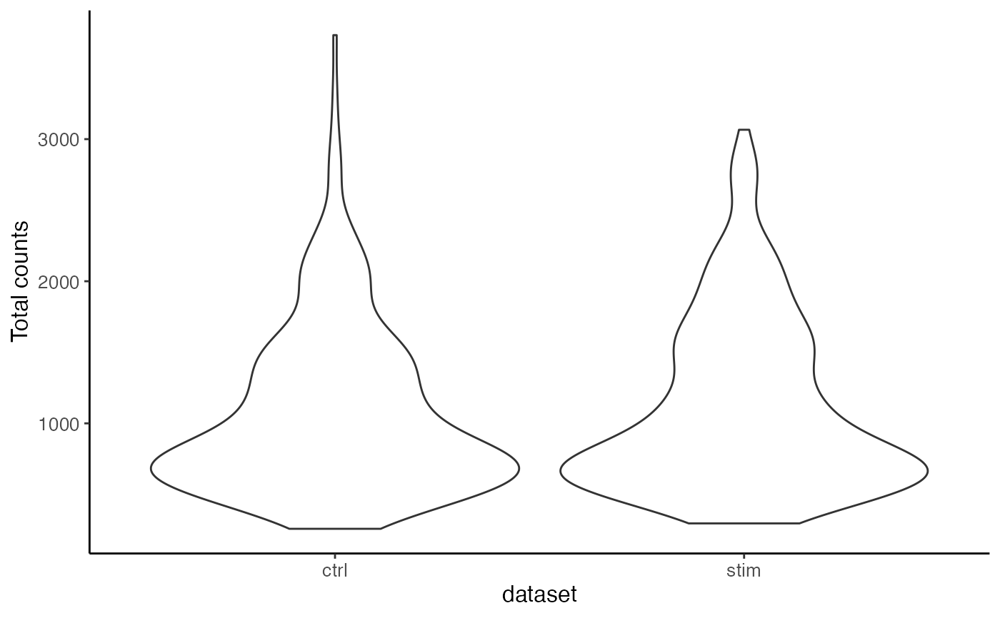
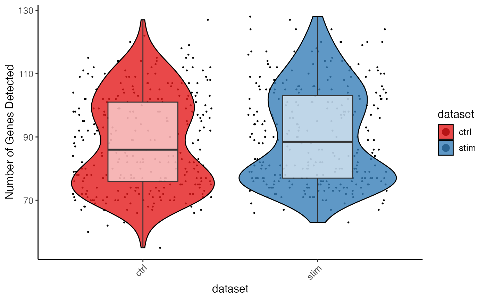

Visualize gene expression or cell metadata with violin plot
Usage
plotGeneViolin(object, gene, byDataset = TRUE, groupBy = NULL, ...)
plotTotalCountViolin(object, groupBy = "dataset", ...)
plotGeneDetectedViolin(object, groupBy = "dataset", ...)Arguments
- object
A liger object.
- gene
Character gene names.
- byDataset
Logical, whether the violin plot should be splitted by dataset. Default
TRUE.- groupBy
Names of available categorical variable in
cellMetaslot. UseFALSEfor no grouping. DefaultNULLlooks clustering result but will not group if no clustering found.- ...
Arguments passed on to
plotCellViolin,.ggCellViolin,.ggplotLigerThemeslotChoose the slot to find the
yvariable. See Details. Default"cellMeta".yFuncA function object that expects a vector/factor/data.frame retrieved by
yas the only input, and returns an object of the same size, so that the y-axis is replaced by this output. Useful when, for example, users need to scale the gene expression shown on plot.cellIdxCharacter, logical or numeric index that can subscribe cells. Missing or
NULLfor all cells.titlesTitle text. A character scalar or a character vector with as many elements as multiple plots are supposed to be generated. Default
NULL.violin,box,dotLogical, whether to add violin plot, box plot or dot (scatter) plot, respectively. Layers are added in the order of dot, violin, and violin on the top surface. By default, only violin plot is generated.
violinAlpha,boxAlphaNumeric, controls the transparency of layers. Default
0.8,0.6, respectively.violinWidth,boxWidthNumeric, controls the width of violin/box bounding box. Default
0.9and0.4.dotColor,dotSizeNumeric, globally controls the appearance of all dots. Default
"black"andgetOption("ligerDotSize")(1).xlabAngleNumeric, counter-clockwise rotation angle of X axis label text. Default
45.rasterLogical, whether to rasterize the dot plot. Default
NULLautomatically rasterizes the dot plot when number of total cells to be plotted exceeds 100,000.seedRandom seed for reproducibility. Default
1.legendFillTitleLegend title text for fill aesthetics, often used for violin, box, bar plots. Default
NULLshows the original variable name.showLegendWhether to show the legend. Default
TRUE.legendPositionText indicating where to place the legend. Choose from
"top","bottom","left"or"right". Default"right".baseSizeOne-parameter control of all text sizes. Individual text element sizes can be controlled by other size arguments. "Title" sizes are 2 points larger than "text" sizes when being controlled by this.
titleSize,xTitleSize,yTitleSize,legendTitleSizeSize of main title, axis titles and legend title. Default
NULLcontrols bybaseSize + 2.subtitleSize,xTextSize,yTextSize,legendTextSizeSize of subtitle text, axis texts and legend text. Default
NULLcontrols bybaseSize.panelBorderWhether to show rectangle border of the panel instead of using ggplot classic bottom and left axis lines. Default
FALSE.colorLabelsCharacter vector for modifying category names in a color legend. Passed to
ggplot2::scale_color_manual(labels). DefaultNULLuses original levels of the factor.colorValuesCharacter vector of colors for modifying category colors in a color legend. Passed to
ggplot2::scale_color_manual(values). DefaultNULLuses internal selected palette when <= 26 categories are presented, otherwise ggplot hues.legendNRow,legendNColInteger, when too many categories in one variable, arranges number of rows or columns. Default
NULL, automatically split toceiling(levels(variable)/10)columns.plotlyWhether to use plotly to enable web based interactive browsing for the plot. Requires installation of package "plotly". Default
FALSE.
Examples
plotGeneViolin(pbmcPlot, varFeatures(pbmcPlot)[1],
groupBy = "leiden_cluster")
#> $ISG15.ctrl

#>
#> $ISG15.stim

#>
plotTotalCountViolin(pbmc)

plotGeneDetectedViolin(pbmc, dot = TRUE, box = TRUE, colorBy = "dataset")
